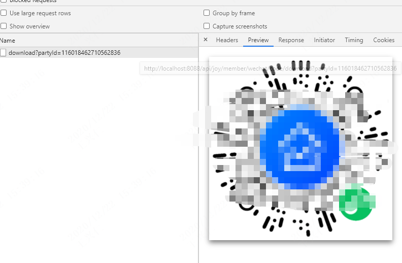
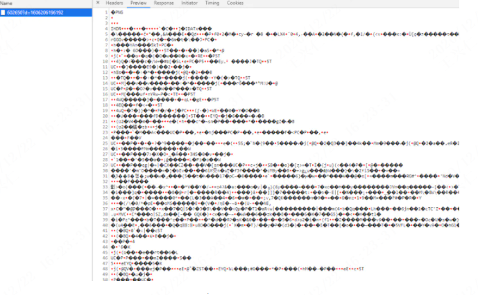
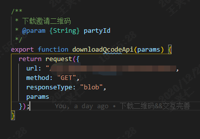

最近项目中有个功能需求：通过调用接口，动态传参，下载一张二维码图片。
第一个方案：前端直接使用图片网络url，通过a标签实现了下载，也确实能够下载，而且支持跨域下载图片。但是目前这个业务，图片都是挂在阿里云oss服务上的，可能oss管理后台中开启了防盗链，跨域设置也没放开，又不想去找大佬（感觉谁都欠他一百万），于是启动第二个方案，通过接口实现下载。
第二个方案：前期工作一切准备就绪，发现接口返回如下：

也可能会发现返回结果一堆乱码

好了，接口没问题，返回了一张图片，但是怎么没有触发下载呢？自力更生，充分发扬“基于百度编程”的良好传统。以下是解决思路：
第一步：axios设置responseType: "blob"，将结果转换为二进制数据；（我是基于axios做了二次封装的接口调用，关于blob下边有说）

第二步：生成Blob对象并通过blob对象和URL对象的createObjectURL生成一个url链接。
const myBlob = new window.Blob([res], { type: "image/png" });
let url = window.URL.createObjectURL(myBlob);第三步：封装方法，使用canvas和a标签下载的方式最终实现图片的下载，整体代码如下
const getUrlBase64 = (url, name) => {
return new Promise(resolve => {
let img = new Image();
img.setAttribute("crossOrigin", "anonymous"); // 允许图片跨域下载
img.src = url;
img.onload = function() {
let canvas = document.createElement("canvas");
let ctx = canvas.getContext("2d");
canvas.height = 300;
canvas.width = 300;
ctx.drawImage(img, 0, 0, 300, 300);
let dataURL = canvas.toDataURL("image/png");
let link = document.createElement("a");
link.href = dataURL;
link.download = `qrCode-${name}.png`;
link.click();
canvas = null;
resolve();
};
});
};
// 调用
// 下载二维码
async download() {
let res = await downloadQcodeApi({ ... });
const myBlob = new window.Blob([res], { type: "image/png" });
let url = window.URL.createObjectURL(myBlob);
getUrlBase64(url, name);
}—- 关于Blob —-
Blob（Binary Large Object）对象代表了一段二进制数据，提供了一系列操作接口。其他操作二进制数据的 API（比如 File 对象），都是建立在 Blob 对象基础上的，继承了它的属性和方法。生成 Blob 对象有两种方法：一种是使用 Blob 构造函数，另一种是对现有的 Blob 对象使用 slice 方法切出一部分。
（1）Blob 构造函数，接受两个参数。第一个参数是一个包含实际数据的数组，第二个参数是数据的类型，这两个参数都不是必需的。
let a = ["hello", "world"];
let myBlob = new Blob(a, { "type" : "text/xml" });
console.log(myBlob);（2）Blob 对象的 slice 方法，将二进制数据按照字节分块，返回一个新的 Blob 对象。
let a = ["hello", "world"];
let myBlob = new Blob(a, { "type" : "text/xml" });
let newBlob = myBlob.slice(0, 5);
console.log(newBlob);—- 关于createObjectURL —-
调用 URL 对象的 createObjectURL 方法，传入一个 File 对象或者 Blob 对象，能生成一个URL链接。
let objecturl = window.URL.createObjectURL(blob);上面的代码会对二进制数据生成一个 URL，这个 URL 可以放置于任何通常可以放置 URL 的地方，比如 img 标签的 src 属性。需要注意的是，即使是同样的二进制数据，每调用一次 URL.createObjectURL 方法，就会得到一个不一样的 URL。
这个 URL 的存在时间，等同于网页的存在时间，一旦网页刷新或卸载，这个 URL 就失效。（File 和 Blob 又何尝不是这样呢）除此之外，也可以手动调用 URL.revokeObjectURL 方法，使 URL 失效。
注：mock模块会影响原生的ajax请求，使得服务器返回的blob类型变成乱码。意思是说如果你的项目中使用了mock.js模拟后端请求，mock.js在做初始化的时候会拦截你的“responseType”设置。